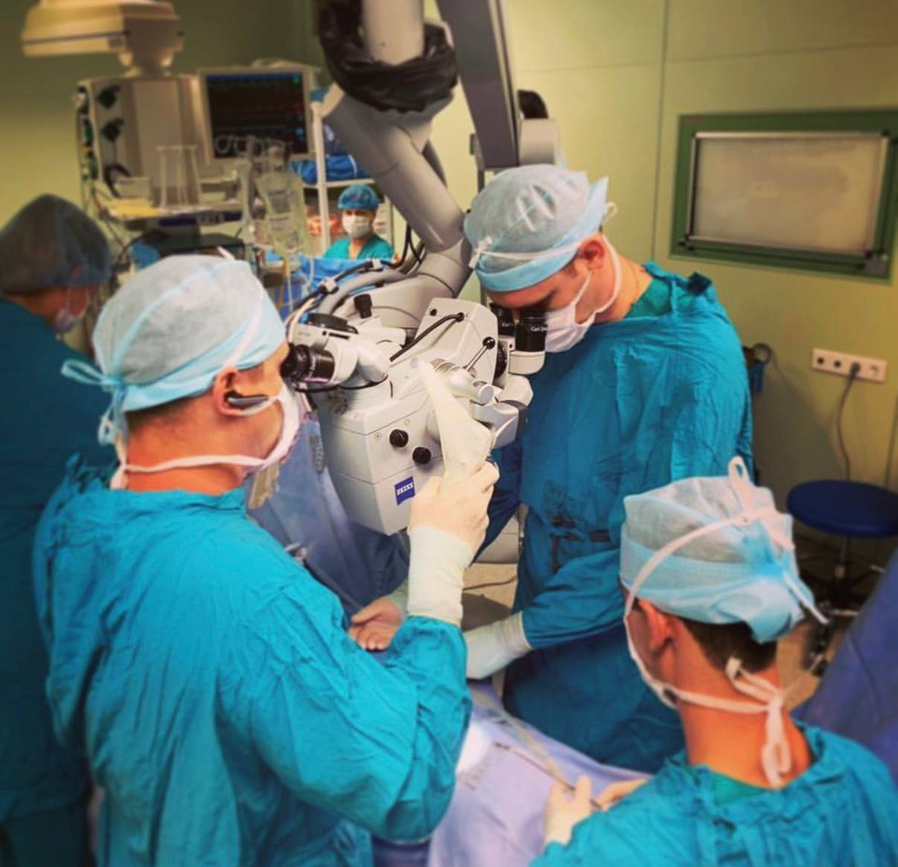

МАТУСЕВИЧ ВЯЧЕСЛАВ ВИКТОРОВИЧ
Сосудистый хирург. Экспертная реконструктивная хирургия аорты и сонных артерий.

Сосудистый хирург. Экспертная реконструктивная хирургия аорты и сонных артерий.
Сложные случаи • Современные технологии

Применение операционного микроскопа экспертного класса для прецизионного формирования сосудистых анастомозов.

Слаженная работа хирургической команды ККБ №1 обеспечивает безопасность пациента при многочасовых реконструкциях.